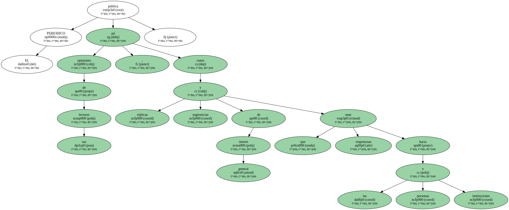
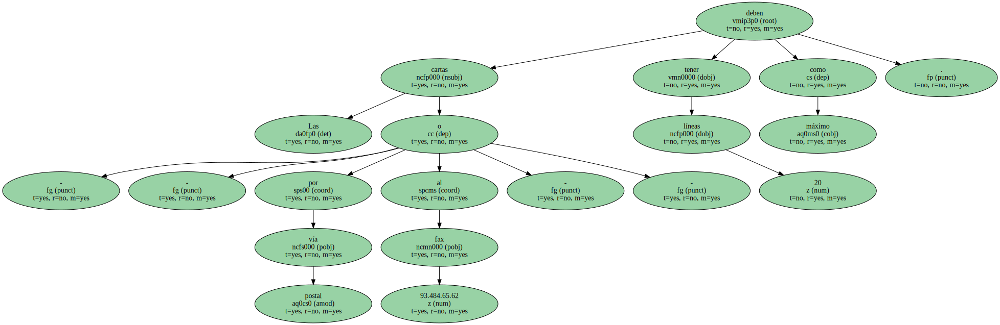
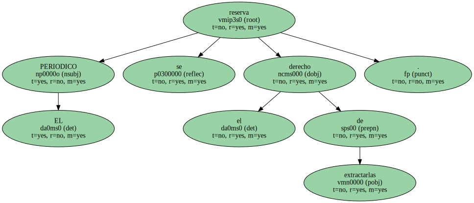
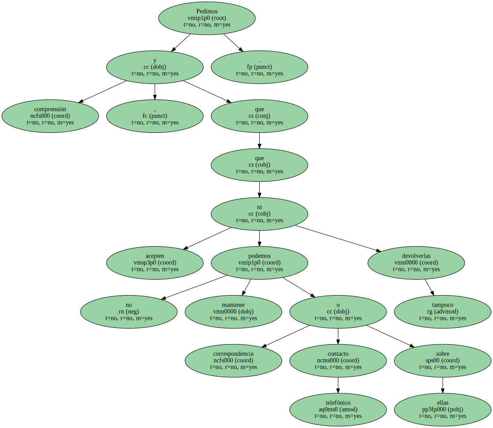
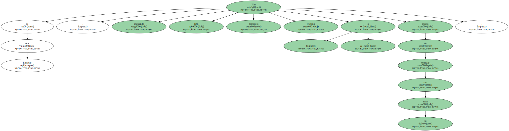

EL PERIODICO publica opiniones de sus lectores , así como réplicas y sugerencias de interés general que sean respetuosas hacia las personas e instituciones.
Las cartas - - por vía postal o al fax 93.484.65.62 - - deben tener como máximo 20 líneas.
EL PERIODICO se reserva el derecho de extractarlas.
Aun así , resulta imposible publicarlas todas.

Pedimos comprensión , y que acepten que no podemos mantener correspondencia o contacto telefónico sobre ellas ni tampoco devolverlas.
Han de estar firmadas , indicando DNI , domicilio y teléfono o medio de conectar con su autor.
